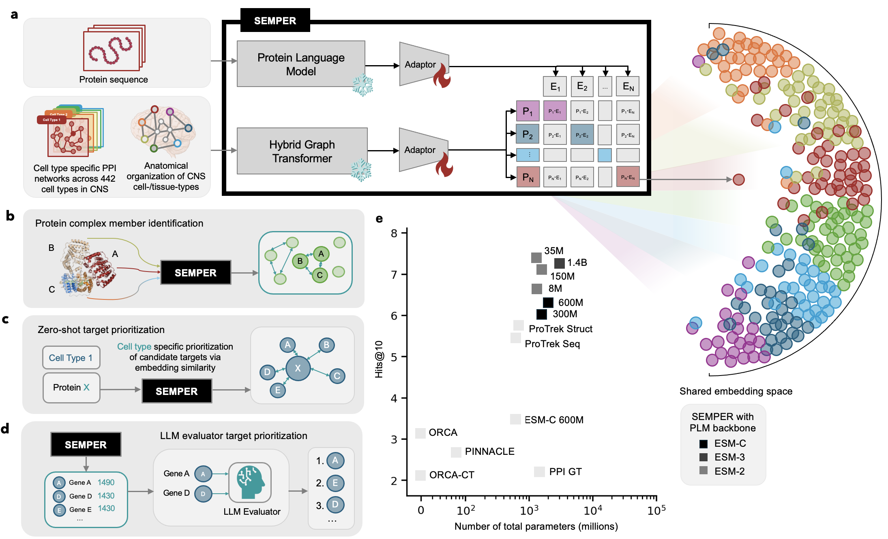
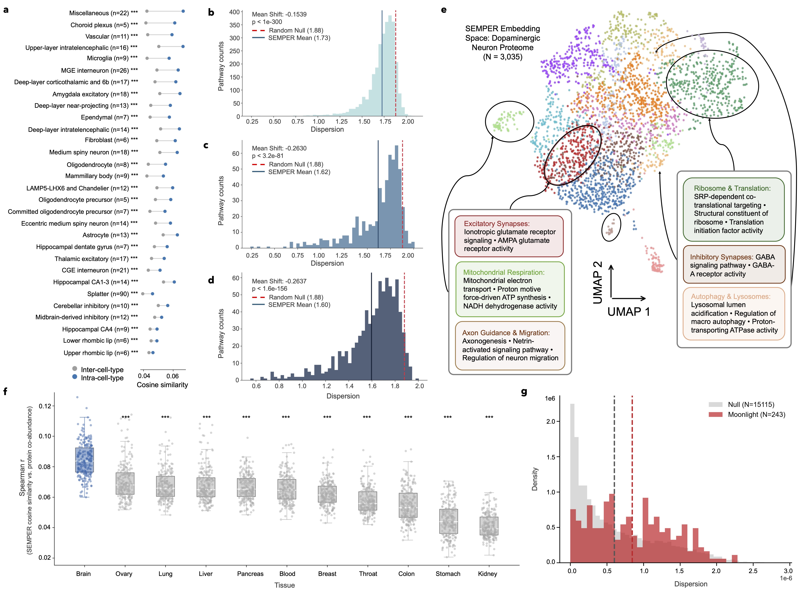
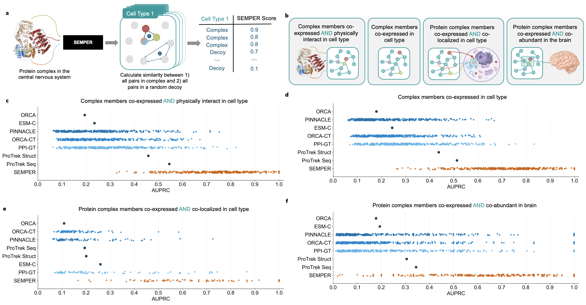
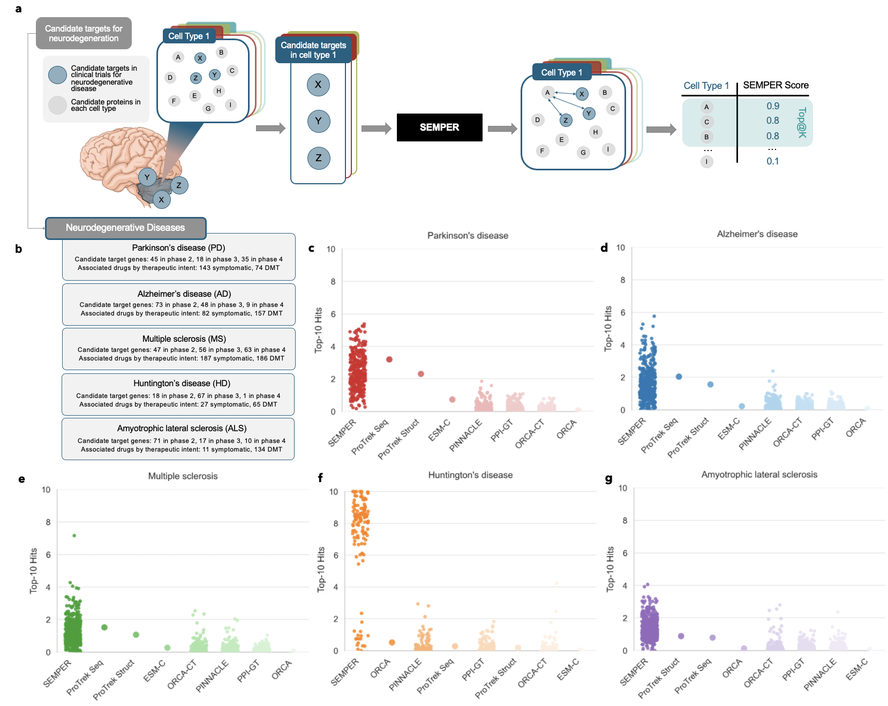
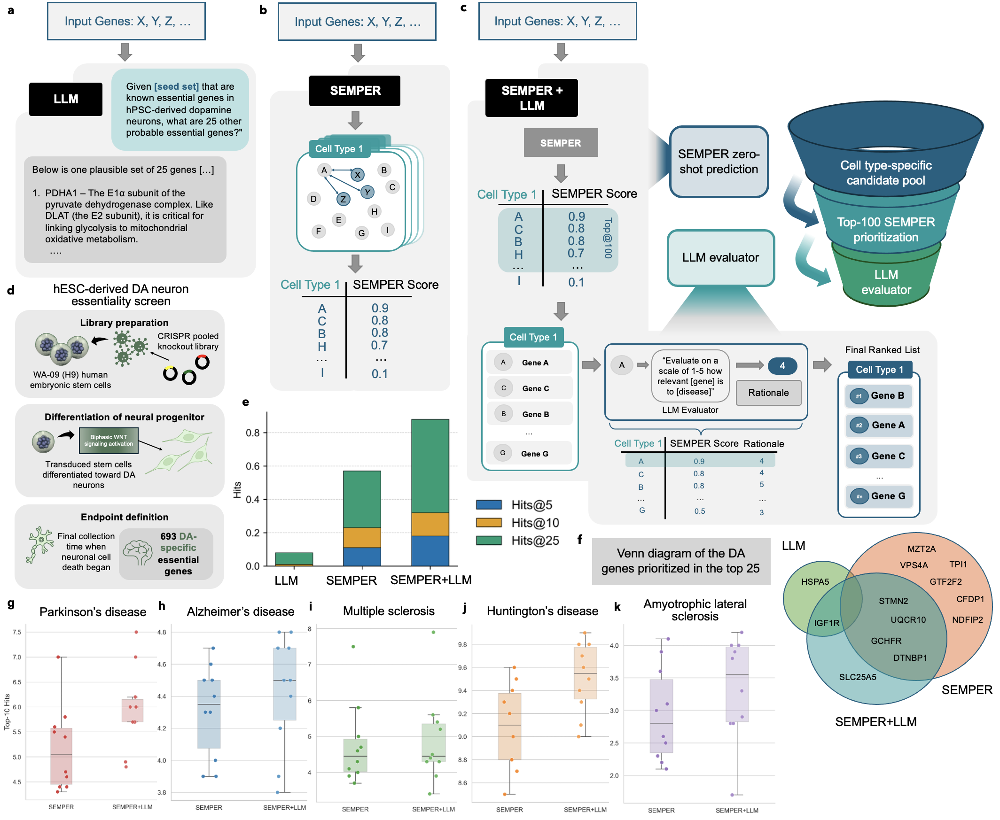
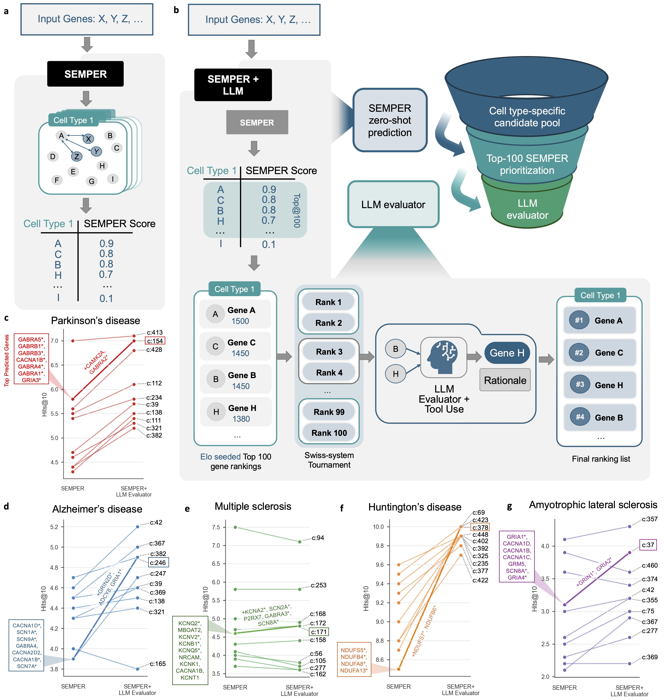

Proteins carry out cellular functions largely through their interactions with other proteins. Because the set of proteins expressed differs from one cell type to the next, a given protein can engage different partners depending on its cellular context. This context dependence is well documented but difficult to represent computationally, and it is particularly relevant in the central nervous system (CNS), whose diversity of neuronal and glial cell types has been linked to the cell type-specific vulnerability observed across neurodegenerative diseases. Yet existing protein representation methods capture only part of the picture: sequence-based models assign each protein a single, context-free embedding, while network-based models incorporate cellular context but set sequence information aside.
SEMPER learns cell type-aware protein embeddings that combine both. A frozen hybrid graph transformer encodes each protein's context within cell type-specific protein–protein interaction (PPI) networks and a metagraph of cellular and tissue organization, and a frozen protein sequence encoder represents its amino acid sequence; a symmetric InfoNCE objective aligns the two into a shared latent space. Trained across 442 cell types of the human CNS, SEMPER assigns the same protein a distinct embedding in each cellular context, so that its representation reflects where in the brain it acts.
Across our analyses, this embedding space recovers cellular and functional organization: proteins cluster by cell type and by shared function, multifunctional proteins spread across contexts as expected, and cell type-specific protein complexes are recovered more accurately than by the baselines we tested. Building on these representations, SEMPER can prioritize candidate therapeutic targets for five neurodegenerative diseases in a zero-shot setting, and its embedding-derived signals can be combined with large language model reasoning to refine those rankings. These predictions are associative and intended to support hypothesis generation rather than replace experimental validation.
SEMPER integrates three inputs derived from an adult human CNS single-cell transcriptomic atlas: 1D protein sequences, 442 cell type-specific protein–protein interaction (PPI) networks, and a hierarchical metagraph of cellular and tissue organization. A frozen protein sequence encoder and a frozen hybrid graph transformer encode each input independently; trainable adaptors project both into a shared latent space aligned by a symmetric InfoNCE contrastive loss.

Cell type context and biological function structure the SEMPER latent space. Protein embeddings from the same CNS cell type cluster together, proteins sharing Gene Ontology terms are embedded closer than expected under a random null, and Leiden community detection within a single cell type recovers functionally coherent modules. SEMPER embeddings also correlate with protein co-abundance patterns from the human brain more strongly than any other tissue, and extreme multifunctional proteins show higher centroid dispersion than the background proteome.

For a candidate protein complex, SEMPER retrieves cell type-specific embeddings for all member proteins and scores them by mean pairwise cosine similarity, ranked against randomly sampled decoys via AUPRC. SEMPER outperforms all baselines across four definitions of cell type-specific complex.

For each CNS cell type, a random seed set of proteins from clinical trials for a given neurodegenerative disease is used as input to SEMPER. All other actively expressed proteins are ranked by mean cosine similarity to the seed embeddings. SEMPER consistently recovers more held-out clinical targets in the top-K than all benchmarked models across five diseases.

Combining SEMPER's embedding-based retrieval with a pointwise LLM evaluator that scores each candidate on a 1–5 biological relevance scale — weighted equally with SEMPER's similarity score — improves retrieval of essential dopaminergic neuron genes and clinical trial targets across all five diseases.

A Swiss-system Elo tournament further refines SEMPER's top-100 candidates through pairwise head-to-head evaluation by an LLM augmented with live Gene Ontology data retrieval, improving Hits@10 across most CNS cell types and all five diseases.

The full SEMPER codebase is available on GitHub under the MIT License. Pre-trained embeddings and required data files are hosted on Figshare.
# 1. Clone and set up environment
git clone https://github.com/mims-harvard/SEMPER
cd SEMPER
conda env create -f environment.yml && conda activate semper
pip install torch-scatter torch-sparse torch-cluster torch-geometric \
-f https://data.pyg.org/whl/torch-2.1.0+cu118.html
# 2. Download pre-trained embeddings from Figshare (link above)
# Place esm_projected.pth and esm_projected_labels.txt in outputs/contrastive/
# 3. Reproduce paper evaluations
cd evaluate/
# See evaluate/README.md for full usage of each script
If you use SEMPER in your research, please cite:
@article{semper2026,
title = {SEMPER: System-Scale Multimodal Protein Embedding Representations},
author = {Dong, Amy and Li, Michelle M. and {[co-authors]} and Zitnik, Marinka},
journal = {},
year = {2026},
url = {}
}
Questions? Open a GitHub issue or contact marinka@hms.harvard.edu.